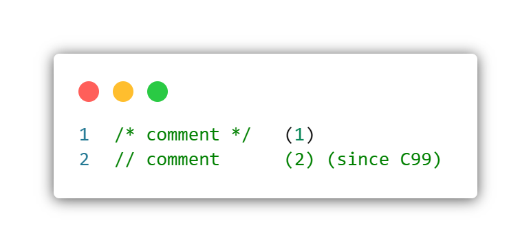
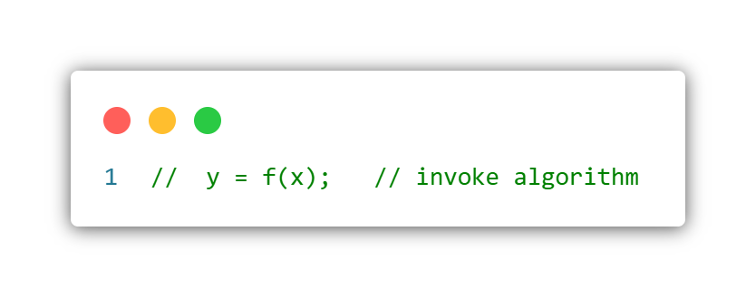
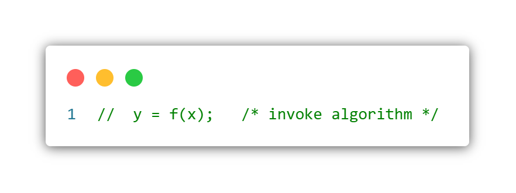
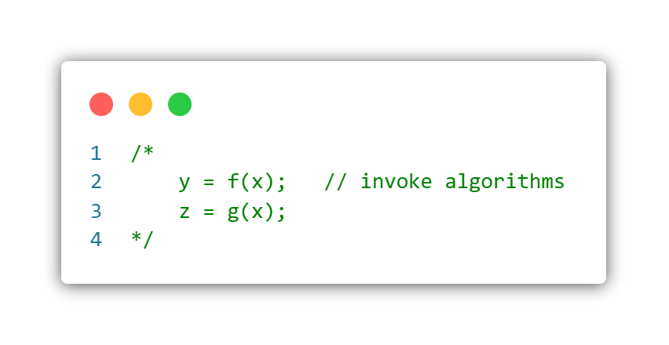
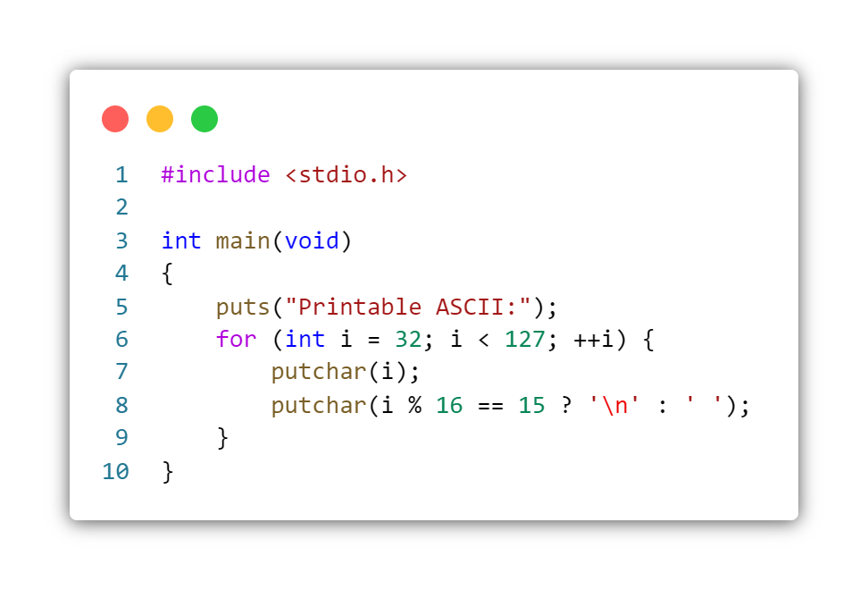
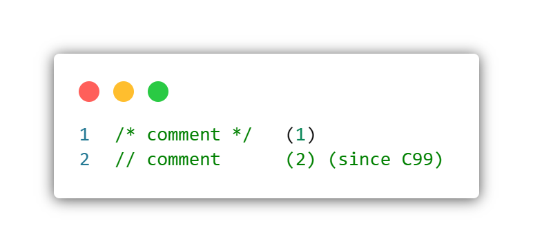
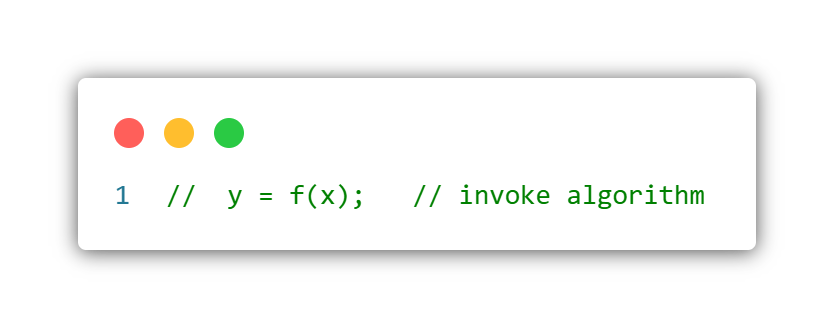
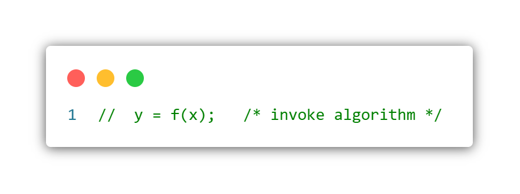
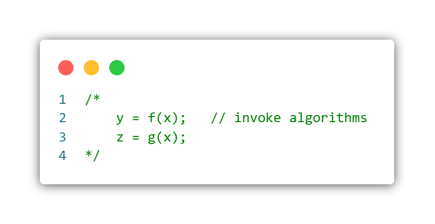

Basic concepts
This section provides definitions for the specific terminology and the concepts used when describing the C programming language.
A C program is a sequence of text files (typically header and source files) that contain declarations. They undergo translation to become an executable program, which is executed when the OS calls its main function (unless it is itself the OS or another freestanding program, in which case the entry point is implementation-defined).
Certain words in a C program have special meaning, they are keywords. Others can be used as identifiers, which may be used to identify objects, functions, struct, union, or enumeration tags, their members, typedef names, labels, or macros.
Each identifier (other than macro) is only valid within a part of the program called its scope and belongs to one of four kinds of name spaces. Some identifiers have linkage which makes them refer to the same entities when they appear in different scopes or translation units.
Definitions of functions include sequences of statements and declarations, some of which include expressions, which specify the computations to be performed by the program.
Declarations and expressions create, destroy, access, and manipulate objects. Each object, function, and expression in C is associated with a type.
Comments serve as a sort of in-code documentation. When inserted into a program, they are effectively ignored by the compiler; they are solely intended to be used as notes by the humans that read source code.
Syntax

- Often known as "C Style" or "multi-line" comments.
- Often known as "C++ Style" or "single-line" comments
All comments are removed from the program at translation phase 3 by replacing each comment with a single whitespace character.
C style
comments are usually used to comment large blocks of text or small fragments of code; however, they can be used to comment single lines. To insert text as a C-style comment, simply surround the text with /* and */. C-style comments tell the compiler to ignore all content between /* and */. Although it is not part of the C standard, /** and */ are often used to indicate documentation blocks; this is legal because the second asterisk is simply treated as part of the comment.
Except within a (character constant), a (string literal), or a comment, the characters /* introduce a comment. The contents of such a comment are examined only to identify multibyte characters and to find the characters */ that terminate the comment. C-style comments cannot be nested.
C++ Style
C++ Style comments are usually used to comment single lines of text or code; however, they can be placed together to form multi-line comments. To insert text as a C++-style comment, simply precede the text with // and follow the text with the new line character. C++-style comments tell the compiler to ignore all content between // and a new line.
Except within a (character constant), a (string literal), or a comment, the characters // introduce a comment that includes all multibyte characters up to, but not including, the next new-line character. The contents of such a comment are examined only to identify multibyte characters and to find the new-line character that terminates the comment. C++-style comments can be nested:

A C Style comment may appear within a C++ Style comment:

A C++ Style comment may appear within a C Style comment; this is a mechanism for excluding a small block of source code:

The following chart contains all 128 ASCII decimal (dec), octal (oct), hexadecimal (hex) and character (ch) codes.

Note: in Unicode, the ASCII character block is known as U+0000..U+007F Basic Latin.pdf
Example

Objects, functions, and expressions have a property called type, which determines the interpretation of the binary value stored in an object or evaluated by the expression.
Type classification
The C type system consists of the following types:
- the type void
- basic types
- enumerated types
- derived types
Comments
Comments serve as a sort of in-code documentation. When inserted into a program, they are effectively ignored by the compiler; they are solely intended to be used as notes by the humans that read source code.
Syntax
All comments are removed from the program at translation phase 3 by replacing each comment with a single whitespace character.
C style
comments are usually used to comment large blocks of text or small fragments of code; however, they can be used to comment single lines. To insert text as a C-style comment, simply surround the text with /* and */. C-style comments tell the compiler to ignore all content between /* and */. Although it is not part of the C standard, /** and */ are often used to indicate documentation blocks; this is legal because the second asterisk is simply treated as part of the comment. Except within a (character constant), a (string literal), or a comment, the characters /* introduce a comment. The contents of such a comment are examined only to identify multibyte characters and to find the characters */ that terminate the comment. C-style comments cannot be nested.
C++ Style
C++ Style comments are usually used to comment single lines of text or code; however, they can be placed together to form multi-line comments. To insert text as a C++-style comment, simply precede the text with // and follow the text with the new line character. C++-style comments tell the compiler to ignore all content between // and a new line. Except within a (character constant), a (string literal), or a comment, the characters // introduce a comment that includes all multibyte characters up to, but not including, the next new-line character. The contents of such a comment are examined only to identify multibyte characters and to find the new-line character that terminates the comment. C++-style comments can be nested:
A C Style comment may appear within a C++ Style comment:
A C++ Style comment may appear within a C Style comment; this is a mechanism for excluding a small block of source code:
